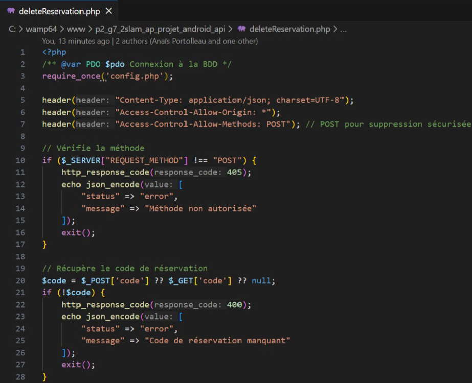
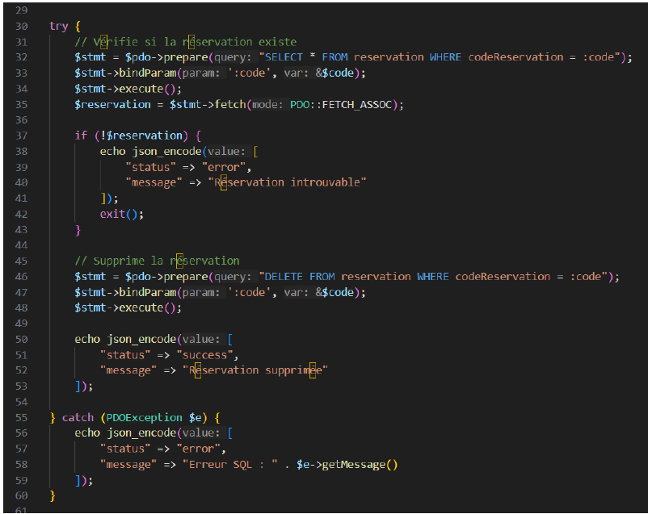
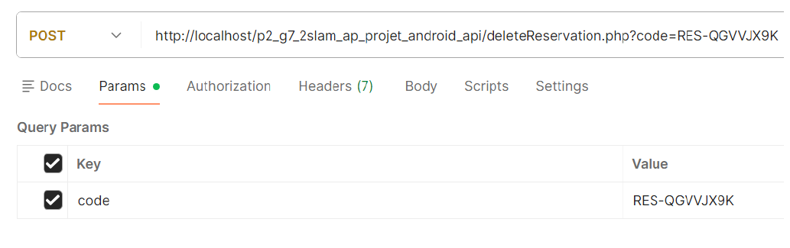
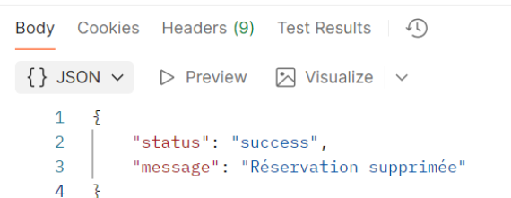
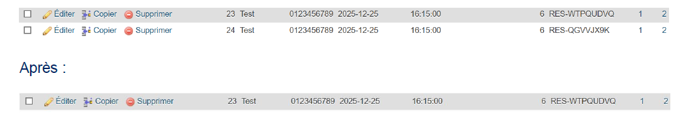

Ticket 6 – API : Suppression d’une réservation
Dans le cadre du Projet 2 Android – Itération 3, j’ai développé le
Ticket 6 qui consiste à créer l’API permettant de supprimer une
réservation depuis le serveur.
Ce développement a été effectué sur la branche iteration3 (API).
L’objectif était de vérifier l’existence d’une réservation via son code et de la supprimer
en toute sécurité.
Fonctionnement du script
- Le fichier commence par inclure config.php pour obtenir la connexion PDO.
- Les headers définissent que l’API renvoie du JSON, autorisent toutes les origines et
limitent l’accès à la méthode POST.
- Le script vérifie que la requête est bien de type POST, sinon il renvoie un message
d’erreur et s’arrête.
- Le code de réservation à supprimer est récupéré depuis la requête.
Si aucun code n’est transmis, l’API renvoie une erreur JSON indiquant le champ manquant.
- La suppression est encapsulée dans un bloc try/catch pour gérer
les erreurs SQL éventuelles.
- Une première requête SELECT vérifie que la réservation existe.
Si elle n’existe pas, l’API renvoie un message JSON d’erreur et s’arrête.
- Si la réservation existe, une requête DELETE supprime la ligne correspondante.
L’API renvoie alors un message JSON confirmant la suppression.
- En cas d’exception PDO, le catch renvoie un message JSON explicite avec les détails
de l’erreur SQL.


Test fonctionnel
Objectif : Vérifier la suppression d’une réservation via l’API.
-
Depuis Postman, envoyer une requête POST vers l’URL de suppression
avec un code de réservation existant.
Exemple :
http://localhost/p2_g7_2slam_ap_projet_android_api/deleteReservation.php?code=RES-QGVVJX9K
-
Vérifier la réponse JSON confirmant la suppression de la réservation.
-
Contrôler dans PhpMyAdmin que la réservation a bien été supprimée.
Avant / après : la ligne correspondante n’existe plus après suppression.
-
Tester la suppression d’un code inexistant (ex : RES-QGVVJX9K déjà supprimé) pour
vérifier la gestion d’erreur : l’API renvoie un code HTTP 404 et un message indiquant
que le code n’a pas été retrouvé.


